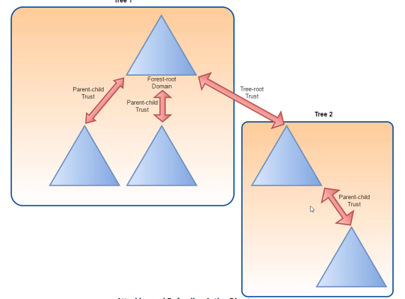
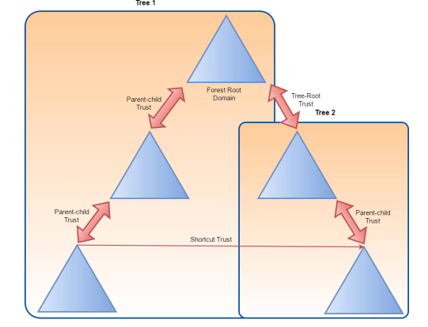
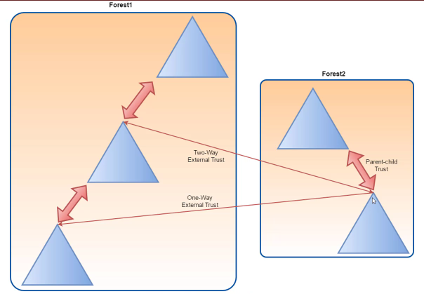
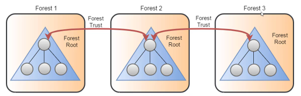

# Active Directory - Domain Trusts
• A
trust is where users of 1 domain/1 forest can access the resources another domain/forest
◇ Automatic trust = parent-child within the same forest
◇ Establishled trust = 2 separate forests
TDOs - Trusted Domain Objects - represent the
trusts within a domain.
## Transitive Trusts
Domain A can access
Domain BDomain B can access
Domain CThis means that
Domain A can access
Domain CThis is a transitive trust.
Domain A ->
Domain B ->
Domain C## Types of Trusts
### Parent -> Child Trust
• Created automatically when a new sub-domain is created
◇ Always a 2-way transitive trust
• e.g.
moneycorp.local ->
dollarcorp.moneycorp.local### Tree -> Root Trust
• Created automatically when a a new domain is addest to a forest
◇ Always a 2-way transitive trust
### Shortcut Trust
• Complex/long trust sequences means access times slow down
• Can solve this with shortcut trusts
### External Trusts
• A trust between 2 domains in different forests when the forests don't have a trust relationship
◇ Can be 1-way or 2-way
◇ Always non-transitive
### Forest Trust
• A trust between forest root domains
◇ Can be 1-way or 2-way
◇ Can be transitive and non-transitive
